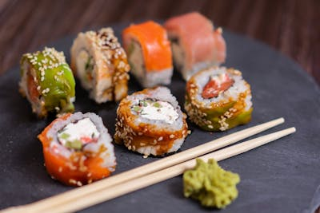

BitCook
Bienvenido/a/e a tus recetas favoritas
Nuestras mejores Recetas
Sushi
- Total: Aproximadamente 12 minutos
- Preparación: Aproximadamente 10 minutos
- Cocción: Aproximandamente 2 minutos

Nakiti
- Total: Aproximadamente 8 minutos
- Preparación: Aproximadamente 6 minutos
- Cocción: Aproximadamente 2 minutos
Nampa
- Total: Aproximadamente 8 minutos
- Preparación: Aproximadamente 6 minutos
- Cocción: Aproximadamente 2 minutos

Nigiri
- Total: Aproximadamente 20 minutos
- Preparación: Aproximadamente 15 minutos
- Cocción: Aproximadamente 5 minutos

Pelat
- Total: Aproximadamente 12 minutos
- Preparación: Aproximadamente 8 minutos
- Cocción: Aproximadamente 4 minutos

Rillito
- Total: Aproximadamente 20 minutos
- Preparación: Aproximadamente 17 minutos
- Cocción: Aproximadamente 3 minuots